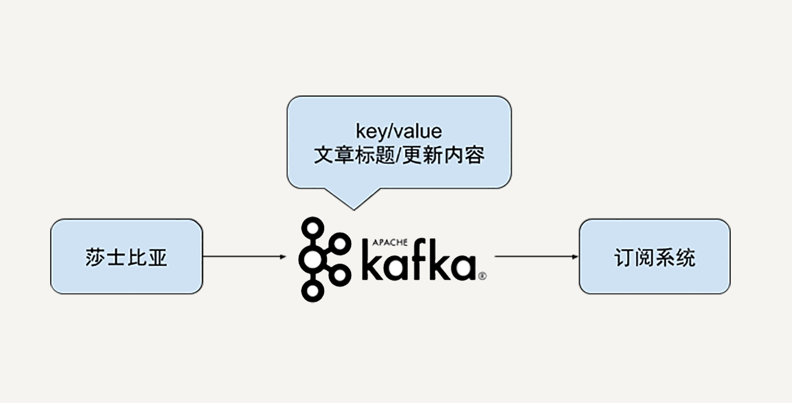

- 00 开篇词 从这里开始，带你走上硅谷一线系统架构师之路.md.html
- 01 为什么MapReduce会被硅谷一线公司淘汰？.md.html
- 02 MapReduce后谁主沉浮：怎样设计下一代数据处理技术？.md.html
- 03 大规模数据处理初体验：怎样实现大型电商热销榜？.md.html
- 04 分布式系统（上）：学会用服务等级协议SLA来评估你的系统.md.html
- 05 分布式系统（下）：架构师不得不知的三大指标.md.html
- 06 如何区分批处理还是流处理？.md.html
- 07 Workflow设计模式：让你在大规模数据世界中君临天下.md.html
- 08 发布_订阅模式：流处理架构中的瑞士军刀.md.html
- 09 CAP定理：三选二，架构师必须学会的取舍.md.html
- 10 Lambda架构：Twitter亿级实时数据分析架构背后的倚天剑.md.html
- 11 Kappa架构：利用Kafka锻造的屠龙刀.md.html
- 12 我们为什么需要Spark？.md.html
- 13 弹性分布式数据集：Spark大厦的地基（上）.md.html
- 14 弹性分布式数据集：Spark大厦的地基（下）.md.html
- 15 Spark SQL：Spark数据查询的利器.md.html
- 16 Spark Streaming：Spark的实时流计算API.md.html
- 17 Structured Streaming：如何用DataFrame API进行实时数据分析_.md.html
- 18 Word Count：从零开始运行你的第一个Spark应用.md.html
- 19 综合案例实战：处理加州房屋信息，构建线性回归模型.md.html
- 20 流处理案例实战：分析纽约市出租车载客信息.md.html
- 21 深入对比Spark与Flink：帮你系统设计两开花.md.html
- 22 Apache Beam的前世今生.md.html
- 23 站在Google的肩膀上学习Beam编程模型.md.html
- 24 PCollection：为什么Beam要如此抽象封装数据？.md.html
- 25 Transform：Beam数据转换操作的抽象方法.md.html
- 26 Pipeline：Beam如何抽象多步骤的数据流水线？.md.html
- 27 Pipeline I_O_ Beam数据中转的设计模式.md.html
- 28 如何设计创建好一个Beam Pipeline？.md.html
- 29 如何测试Beam Pipeline？.md.html
- 30 Apache Beam实战冲刺：Beam如何run everywhere_.md.html
- 31 WordCount Beam Pipeline实战.md.html
- 32 Beam Window：打通流处理的任督二脉.md.html
- 33 横看成岭侧成峰：再战Streaming WordCount.md.html
- 34 Amazon热销榜Beam Pipeline实战.md.html
- 35 Facebook游戏实时流处理Beam Pipeline实战（上）.md.html
- 36 Facebook游戏实时流处理Beam Pipeline实战（下）.md.html
- 37 5G时代，如何处理超大规模物联网数据.md.html
- 38 大规模数据处理在深度学习中如何应用？.md.html
- 39 从SQL到Streaming SQL：突破静态数据查询的次元.md.html
- 40 大规模数据处理未来之路.md.html
- FAQ第一期 学习大规模数据处理需要什么基础？.md.html
- FAQ第三期 Apache Beam基础答疑.md.html
- FAQ第二期 Spark案例实战答疑.md.html
- 加油站 Practice makes perfect！.md.html
- 结束语 世间所有的相遇，都是久别重逢.md.html
- 捐赠
33 横看成岭侧成峰：再战Streaming WordCount
你好，我是蔡元楠。
今天我要与你分享的主题是“横看成岭侧成峰：再战Streaming WordCount”。
在上一讲中，我们学习了Beam窗口（Window）的概念。当时，我们提到窗口技术的产生是因为我们想要根据时间戳去分组处理一个PCollection中的元素。
我们也提到了在“统计莎士比亚文集词频”这个例子中，如果莎士比亚穿越到了现代，成了一名极客时间的专栏作家，我们就可能需要根据他文章的写作时间来统计词频了。
举个具体的例子的话，就是我们能不能灵活地得到莎士比亚在2017年9月使用的高频词汇？或者是他在2018年第7个周五偏爱使用的高频词汇呢？
时效性是数据处理很重要的一部分，类似上面这样的问题还有很多。
比如，能不能根据实时交通数据，得到最近24小时之内拥堵的道路？能不能根据所有微信分享文章的点击数据，得到过去一周最热门的文章？这些问题都是可以用窗口技术来解决。
所以今天这一讲，我们就来看看怎样在WordCount这个例子中使用窗口技术。我会介绍怎样在Beam中实现以下六个问题：
- 怎样区分有界数据还是无界数据？
- 怎样读取无边界数据？
- 怎样给PCollection数据添加时间戳？
- 怎样在PCollection应用窗口？
- 怎样复用之前的DoFn和PTransform？
- 怎样存储无边界数据？
怎样区分有界数据还是无界数据？
我们知道，在Beam中你可以用同一个Pipeline处理有边界数据或者无边界数据。但我们在处理两者时的思考方式和操作方法还是有细微的不同的。
比如，有界数据之所以有界，是因为你在处理数据时，所有的数据就已经准备就绪了。
在第31讲的WordCount例子中，莎士比亚文集早已成为历史，不会有新的作品了。所以，你可以用有界数据的处理方式进行实现。当你的数据输入是有界的时候，下游的数据一般也是有界的。因为你的数据元素是有限的，在数据处理的过程中，不会凭空造出无限多的数据。
而无边界数据的到来是时刻不停的。在你处理处理流水线的任意时刻，数据都没有完全结束。
比如，在我们第1讲中提到的处理美团外卖电动车例子中，美团外卖电动车的图片就是一直在不停地更新。你不可能说“我已经有了所有的外卖电动车图片了”。在无界数据的处理流水线中，因为输入数据是无界的，所以下游的处理结果一般也是无界的。
相信你已经掌握了区分区分有界和无界数据方法。在接下来的内容中，我们会看到针对两种数据的不同处理方式。
但是，不论是有界数据还是无界数据，在Beam中我们都可以用窗口把数据按时间分割成一些有限大小的集合。只是对于无界数据，你必须使用窗口对数据进行分割，然后对每个窗口内的数据集进行处理。
怎样读取无边界数据？
在第31讲WordCount的案例中，我们从一个外部文本文件读取了莎士比亚全集的文本内容。当时，我们使用的是Beam的TextIO：
Java
Pipeline p = Pipeline.create(options);
p.apply("ReadLines", TextIO.read().from(options.getInputFile()))
这是因为我们当时面对的是有边界的数据，在我们的数据处理流水线运行之前，所有的莎士比亚全集文本早已准备就绪，所以我们可以一股脑儿全部读进来。但是当输入数据是无界的时候，我们就没法这样读取数据了。常见的无界数据读取自logging系统或者Pub/Sub系统。
由于logging系统一直在不断地运行，新的log在不停地产生，并且每条log都自带时间戳。比如，我们想要根据用户对于微信文章的点击log分析不同时刻的热门文章，我们就可以去读取微信文章的log。而在Pub/Sub系统中，我们订阅的消息也会永无止境地到来，类似的一般Pub/Sub订阅的每条消息也会自带原生的时间戳。
这一讲中，我们已经假设莎士比亚穿越到现代在极客时间开了个专栏。我们不妨把他的专栏文章更新设计在一个Kafka消息系统中。
如下图所示，即使你并没有使用过Kafka也没有关系。你只需要知道在我们的数据处理系统中能够不定时地收到来自莎士比亚的文章更新，每一次的文章更新包含了更新的文章标题和更新内容。

这时，我们可以使用Beam的Kafka IO来读取来自Kafka的订阅消息。
在下面的示例代码中，我们指定了需要读取的Kafka消息主题“shakespeare”，以及Kafka消息的key/value类型都是String。你需要注意这里的读取选项withLogAppendTime()，它的意思是我们用Kafka的log append time作为我们beam PCollection数据集的时间戳。
Java
pipeline
.apply(KafkaIO.<String, String>read()
.withBootstrapServers("broker_1:9092,broker_2:9092")
.withTopic("shakespeare") // use withTopics(List<String>) to read from multiple topics.
.withKeyDeserializer(StringDeserializer.class)
.withValueDeserializer(StringDeserializer.class)
.withLogAppendTime()
)
怎样给PCollection数据添加时间戳？
一般情况下，窗口的使用场景中，时间戳都是原生的。就如同我们从Kafka中读取消息记录一样，时间戳是自带在每一条Kafka消息中的。
但Beam也允许我们手动给PCollection的元素添加时间戳。例如第31讲的WordCount例子本身就是一个有界数据集，你还记得吗？那么我们怎么给这些有界数据集添加时间戳呢？
第31讲的输入数据格式就是简单的文本文件：
HAMLET
ACT I
SCENE I Elsinore. A platform before the castle.
[FRANCISCO at his post. Enter to him BERNARDO]
BERNARDO Who's there?
FRANCISCO Nay, answer me: stand, and unfold yourself.
为了方便阐述概念，我们不妨假设一下，现在我们的输入文件变成了如下的格式，每一行的开头都会带有一个时间戳，在冒号分隔符号之后才是我们需要处理的文本：
2019-07-05: HAMLET
2019-07-06: ACT I
2019-07-06: SCENE I Elsinore. A platform before the castle.
2019-07-07: [FRANCISCO at his post. Enter to him BERNARDO]
2019-07-07: BERNARDO Who's there?
2019-07-07: FRANCISCO Nay, answer me: stand, and unfold yourself.
当时我们是直接对每一行的文本提取了所有的单词。但在现在这样的输入格式下，我们就可以先把每一行开头的时间戳提取出来。在DoFn的processElement实现中，我们用outputWithTimestamp()方法，可以对于每一个元素附上它所对应的时间戳。
Java
static class ExtractTimestampFn extends DoFn<String, String> {
@ProcessElement
public void processElement(ProcessContext c) {
String extractedLine = extractLine(c.element());
Instant timestamp =
new Instant(extractTimestamp(c.element());
c.outputWithTimestamp(extractedLine, timestamp);
}
}
怎样在PCollection应用窗口？
通过前面的内容，我们已经解决了“PCollection的时间戳来自于哪里”的问题。在无界数据的应用场景中，时间戳往往是数据记录自带的，比如来自Kafka消息。在有界数据的应用场景中，时间戳往往需要自己指定，比如我们读取的自定义的莎士比亚文集格式。
PCollection元素有了时间戳，我们就能根据时间戳应用窗口对数据进行划分。第32讲中，我们已经介绍了常见的窗口种类，有固定窗口、滑动窗口和会话窗口。
要把特定的窗口应用到PCollection上，我们同样使用PCollection的apply()方法。如果是固定窗口，我们就用FixedWindows类型，如果是滑动窗口就用SlidingWindows类型，相应的如果是会话窗口我们就用Sessions窗口类型。下面的代码示例就是使用FixedWindows的情况：
Java
PCollection<String> windowedWords = input
.apply(Window.<String>into(
FixedWindows.of(Duration.standardMinutes(options.getWindowSize()))));
怎样复用之前的DoFn和PTransform？
有了窗口，我们下一步就是把之前的DoFn和PTransform应用到数据集上。
这一步其实是最简单的。因为Beam的Transform不区分有界数据还是无界数据。我们可以一行代码不改，和第31讲用到的例子一样，直接使用之前的CountWords这个PTransform就可以了。
Java
PCollection<KV<String, Long>> wordCounts = windowedWords.apply(new WordCount.CountWords());
值得注意的是，在应用了窗口之后，Beam的transform是在每一个窗口中间进行数据处理的。在我们的例子中，词频统计的是每一个窗口里的词频，而不再是全局的词频。
怎样输出无边界数据？
同数据读取对应，无边界数据的输出也是与有界数据大相径庭。在第31讲中，我们把数据处理结果写进了一个外部文件中，使用了TextIO：
Java
pipeline.apply("WriteCounts", TextIO.write().to(options.getOutput()));
但是在无边界的应用场景中，数据在持续不断地进来。最常见的输出模式是把处理结果还是以Pub/Sub的模式发布出去。
假设我们用Google Pub/Sub输出我们的处理结果的话，我们可以用PubsubIO.writeStrings()方法。同样，这里的输出结果是针对每一个窗口的，每一个窗口都会输出自己的词频统计结果。
Java
pipeline.apply("Write to PubSub", PubsubIO.writeStrings().to(options.getOutputTopic()));
小结
今天我们深入探索了Beam窗口在流处理的场景中的应用。
我们巩固了区分有界数据还是无界数据的方法，掌握了在Beam中怎样读取无边界数据，怎样给PCollection数据添加时间戳，怎样在PCollection应用窗口，怎样复用之前的DoFn和PTransform和怎样输出无边界数据。
将这些方法融会贯通后，相信类似的时间性数据处理或者是流处理问题在你手中都能迎刃而解了。
思考题
你的工作中有哪些应用场景不适合一般的数据批处理呢？能否利用这里介绍窗口方式处理？
欢迎你把答案写在留言区，与我和其他同学一起讨论。如果你觉得有所收获，也欢迎把文章分享给你的朋友。
© 2019 - 2023 Liangliang Lee. Powered by gin and hexo-theme-book.